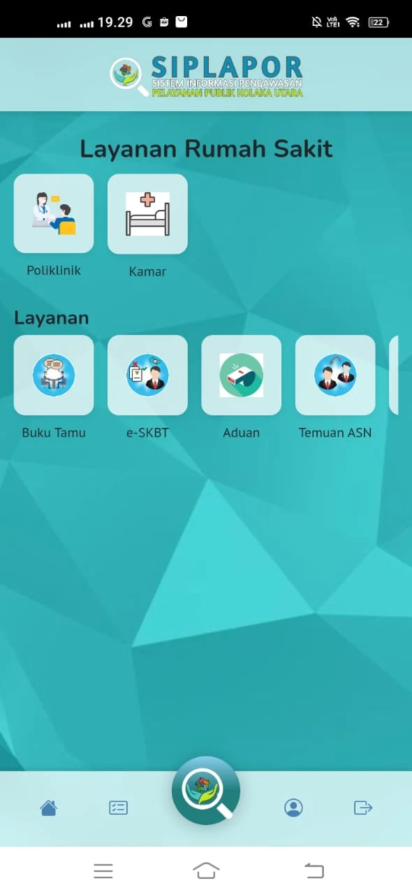
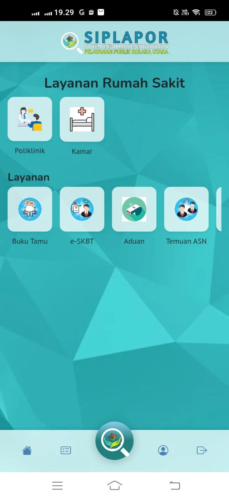
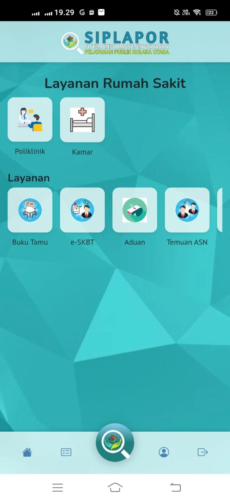
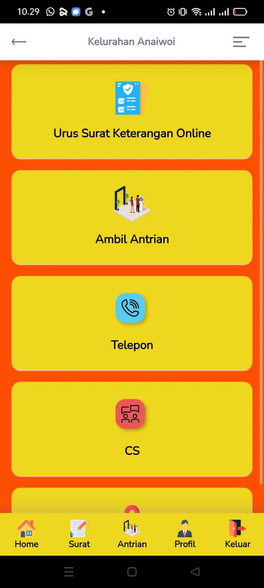
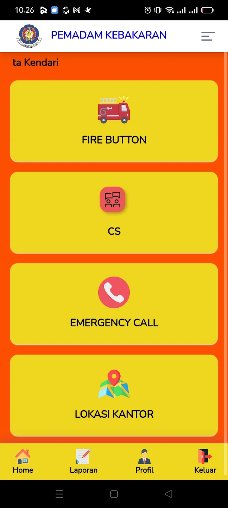
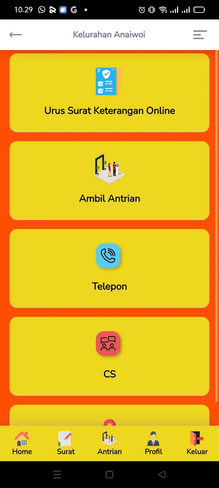
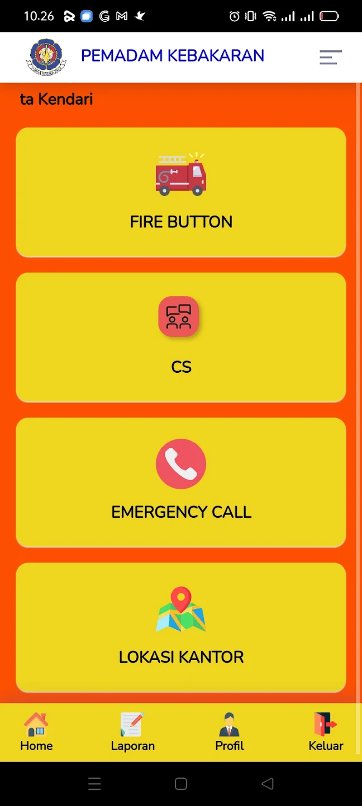
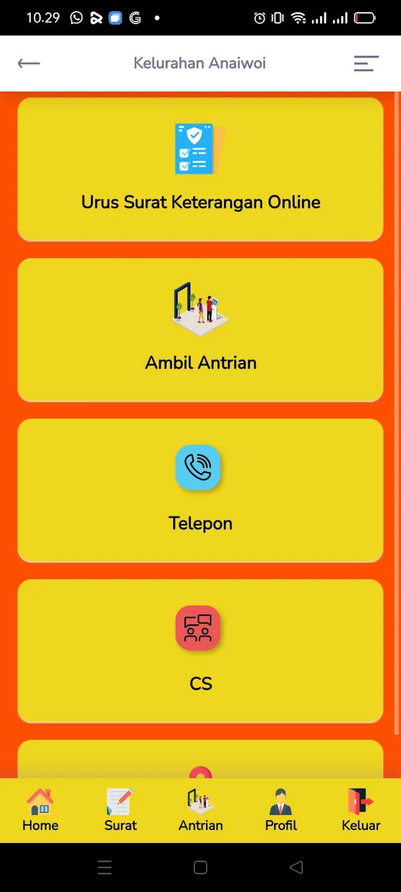
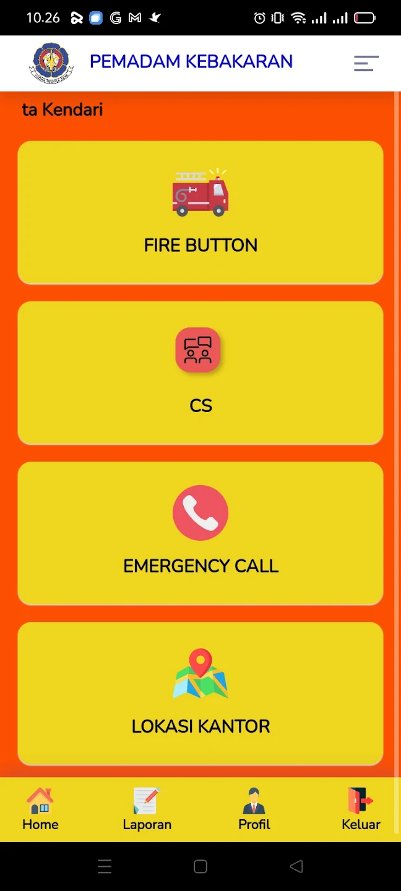

TASBIH SITE
Aplikasi SIPLAPOR
 

Lihat Project
Keterangan
Aplikasi SIPLAPOR adalah aplikasi yang dikembangkan oleh Inspektora Kabupaten
Kolaka Utara yang Launching Bulan Juni 2024
Lihat Project
Aplikasi Maimo
Lihat Project
Keterangan
Aplikasi Maimo adalah aplikasi yang dikembangkan oleh Dinas Pariwisata
Provinsi Sulawesi Tenggara yang Launching Bulan Desember 2023
Lihat Project
Aplikasi Laika
 



Lihat Project
Keterangan
Aplikasi Laika adalah aplikasi yang dikembangkan oleh Dinas Komunikasi dan
Informatika Kota Kendari yang Launching Bulan Desember 2021

Lihat Project